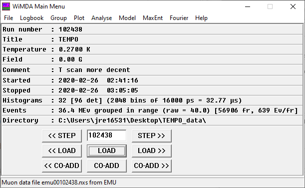

WiMDA Main Menu
WiMDA’s main menu is the window which is used to load data in, and to open up the various other windows for data analysis. It is the first window which opens when you run WiMDA.
{kind=link}
Run Information
The main menu shows the following information about the run:
Field |
Description |
|---|---|
Run Number |
The run number of the data file currently loaded. This will be zero if you are at a facility looking at a run in process. |
Title |
Title of the run, set by the user when doing the experiment (usually the sample name). |
Temperature |
The temperature the run was taken at. By default, this is the temperature in the run label, which may be different from the temperature the sample was actually at when the data were taken (see the hint below). |
Field |
The magnetic field applied on the sample when the run was taken. Like temperature, by default this is the field written in the run labels, which may be slightly different from the field at the sample (see hint below). |
Comment |
The user-defined comment in the data file, usually containing extra information about the run. |
Started/Stopped |
The data and time the data collection started and stopped. |
Histograms |
The number of histograms measuring the positron events – essentially the number of detectors. If the instrument contains more than 32 detectors (e.g EMU), multiple detectors are put into one histogram. For each histogram, the data is discretised into \(n\) bins of \(t\) seconds each, so the longest time the data goes out to is \(nt\). |
Events |
The number of muon decay events measured across all detectors, in MEv (Millions of Events). For pulsed facilities, it also shows how many frames (‘fr’, which is the number of pulses of muons incident on the sample), and the number of events per frame (Ev/fr), which corresponds to the number of decaying muons picked up by the detectors per pulse. If the number of events per frame is particularly large, you should consider applying a deadtime correction. |
Directory |
The directory where WiMDA is loading the data files from. |
Hint
To make it so that the temperature or field listed in the WiMDA main menu is the average temperature from the temperature or field logs (something one often wants to do), go to the ‘Fit Table’ window, click ‘Options’ and then ‘T [or B] from ave in TLOG’, and load the data again..
Run Navigation
The white text box below the run information by default shows the current run number. This can be increased or decreased using the ‘STEP >>’ and ‘<< STEP’ buttons respectively, or you can type in a different run number manually. Clicking ‘LOAD’ loads the run number in the white text box, and the ‘<< LOAD’ and ‘LOAD >>’ buttons load the next and previous runs respectively.
In experiments where multiple runs are taken with the same conditions, these can be combined with the ‘COADD’ buttons, which produces a weighted average of the multiple runs, weighted by the number of events.
Menus
File Menu
Open |
Opens desired file for WiMDA analysis. When the file is opened WiMDA saves the file location and filename format details as defaults in the set-up file. |
Save/ Save as |
Creates an ASCII file containing the results produced by WiMDA. E.g. if a plot of asymmetry versus time was produced a file containing the times and corresponding values of asymmetry would be created. If the plot was fitted then the fit values can also be saved. |
Load fit libraries |
Specifies the directory where the libraries of fit functions are to be loaded from and loads them. |
Printer set-up |
Allows printer options to be chosen e.g. which printer to use or whether to print portrait or landscape documents |
Co-sub mode |
This switches the co-add function to co-subtract. Allows one run to be subtracted from another. This is usually used if e.g. an experiment is left to run until 10 million events are recorded and then stopped. Then the same experiment is left running until 20 million results are recorded. The 10 million event run could be subtracted from the 20 million event run to obtain the results of the experiment between 10 and 20 million events. |
Setup |
Open the WiMDA setup window – see the ‘Setting up WiMDA’ section here. |
Generate test data |
Generates test data for the function in the analysis window (see the Analyse window section). |
Generate histogram report |
Generates a table of the number of decay events in each histogram for each run. This file will be saved in the analysis directory. |
Exit |
Exits the program |
Logbook
Opens up a window to create a logbook, showing a summary of all the runs taken.
Group
Opens the Grouping window, which allows one to group the data appropriately before fitting, apply background and deadtime corrections, and estimate alpha.
Plot
Data Open up the window showing a plot of the data.
Parameters Select the plot parameters (whether to plot counts or asymmetry, axis limits, ticks, etc).
GLE Open a GLE editor, for editing the model plot output.
Hard Copy Print the plot in the plot window.
Analyse
Opens the analysis window, where one can define a fit function for the data and use this to fit it.
Model
Use the output of the fits of the data (in the Fit Table window) to fit a function to the fitted parameters.
MaxEnt
Opens the Maximum Entropy analysis window, which creates the frequency spectrum with the minimum structure from the measured data.
Fourier
Opens the Fourier window, which allows one to define parameters for the fourier transform if one is plotting the frequency spectrum of the data.